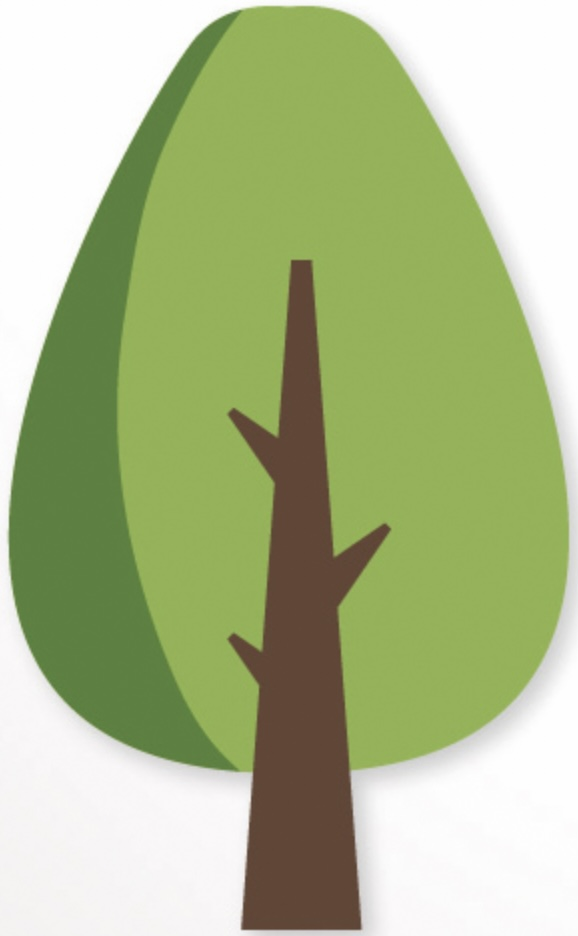
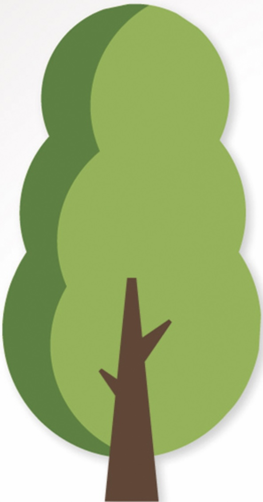

Das Projekt setzt sich aus vier verschiedenen Säulen zusammen:
Die erste Säule ist das Pflanzen von sogenannten Klimabäumen auf dem Schulgelände, in der Innenstadt, in Privatgärten und auf Firmengeländen der Region.

Die zweite Säule stellt das insekten-freundliche Aufforsten von Privatgärten dar. Die Schülerinnen und Schüler beraten und helfen beim Pflanzen der insekten-freundlichen Stauden und Gehölze.

Das Projekt „Mein Regenwald“ stellt die dritte Säule des Projektes dar. So sollen durch die zweite Säule neben dem Schutz der Insekten auch Spendengelder für weitere Klimabäume und das Projekt „Mein Regenwald“ von Chance e. V. generiert werden.
Die vierte Säule ist das Informieren der Bürgerinnen und Bürger sowie Politik und Wirtschaft auf regionaler Ebene zur aktuellen Problemlage lokal, wie global. Dazu wollen die Schüler/innen einen social media Account sowie die Projekthomepage nutzen. Immer wieder können dann Challenges zur Verbesserung des Klimas bzw. zum nachhaltigen Umgang mit Ressourcen über diese Kanäle forciert werden.